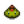

Dinosaurier-Ei
| Dinosaurier-Ei | |||||||||||||||||||||||
| Ein riesiges Dinosaurier-Ei... Die Schale ist noch komplett intakt! | |||||||||||||||||||||||
| Information | |||||||||||||||||||||||
| Quelle |
|
||||||||||||||||||||||
| Energie | Ungenießbar | ||||||||||||||||||||||
|
|||||||||||||||||||||||
|
|||||||||||||||||||||||
Das Dinosaurier-Ei ist ein Artefakt und ein Tierprodukt.
Das Ei kann durch das Ausgraben von Artefakt-Orten in den Bergen, in Schatzkisten gefunden, vom Pfeffer Rex als Beute fallen gelassen oder im Kran-Minispiel im Kino als Preis gewonnen werden.
Legt man das Ei in den Brutkasten im großen Hühnerstall, so schlüpft nach 12 Tagen (nach 6 Tagen mit Beruf des Stallmeisters) ein Dinosaurier, welcher alle 7 Tage weitere Eier legt.
Tipp: Aufgrund seiner Seltenheit sollte man das Dinosaurier-Ei erst in den Brutkasten legen. So hat man definitiv einen Dinosaurier, mit dessen Eiern man wiederum die Museumskollektion vervollständigen kann.
Als Geschenk
| Reaktionen der Dorfbewohner
| |
|---|---|
| Mag es | |
| Gefällt nicht | |
Handwerkswaren
- Siehe auch: Rentabilität von Tierprodukten
Dinosaurier-Eier können genutzt werden, um Dinosaurier Mayonnaise herzustellen.
| Bild | Name | Beschreibung | Zutaten | Ausrüstung | Dauer | Verkaufspreis |
|---|---|---|---|---|---|---|
| Dinosaurier Mayonnaise | Sie ist dick und cremig, mit einem kräftigen grünen Farbton. Es riecht nach Gras und Leder. |
Bündel
Wird für kein Bündel gebraucht.
Rezepte
Wird für kein Rezept benötigt.
Schneiderei
Dinosaurier-Ei kann in der Spule der Nähmaschine verwendet werden, um einen  Dinosaurier Hut herzustellen.
Aufträge
Wird für keinen Auftrag benötigt.
Geschichte
- 1.0: Eingeführt.
- 1.4: Dinosaurier Mayonnaise eingeführt. Wenn man früher ein Dinosaurier-Ei in die Mayonnaise-Maschine gesteckt hat, bekam man normale Mayonnaise. Wird nun vom Pfeffer Rex fallen gelassen, kann vom Kran-Minispiel gewonnen und auf der Prähistorischen Ebene gesammelt werden.
- 1.5: Artefakte werden jetzt vom Zwerg und Penny gemocht, nicht gemocht von allen anderen NPCs.
| Tiere und deren Erzeugnisse | |
|---|---|
| Hühnerstall-Tiere | Dinosaurier (Dinosaurier-Ei) • Ente (Entenei • Entenfeder) • Goldenes Huhn (Gold-Ei) • Hase (Wolle • Hasenpfote) • Huhn (Ei • Großes Ei • Braunes Ei • Großes Braunes Ei) • Schattenhuhn (Schattenei) |
| Stall-Tiere | Kuh (Milch • Große Milch) • Schaf (Wolle) • Schwein (Trüffel) • Strauß (Straußenei) • Ziege (Ziegenmilch • Große Ziegenmilch) |
| Fischteich | Fisch (Fischlaich) |
| Schleim-Stall-Tiere | Schleime (Schleim • Schleimball • Schleim-Ei) |
| Haustiere | Hund • Katze • Pferd |